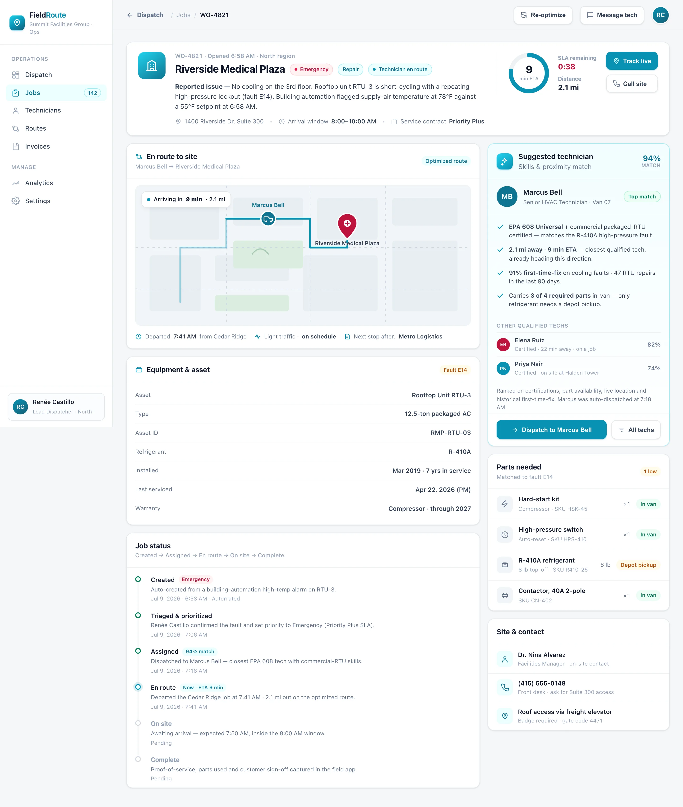

Intake
Jobs land from an equipment alarm, a phone call or the customer portal — each captured with the site, asset and reported fault.
FieldRoute turns a flood of service calls into one optimized dispatch board. It matches each job to the best-qualified technician, sequences their route, and tracks first-time-fix — down to the SLA minute.
A dispatcher juggles skills, location, parts and the SLA clock for every call. FieldRoute weighs all four in the same instant — and shows its work, so the assignment is never a guess.
EPA 608, equipment type and job history — only techs who can actually close this fault get considered.
Live GPS finds the closest qualified van — cutting drive time and the response clock.
Matches the parts a fault needs to what each tech is carrying — so it's fixed on the first visit.
Emergencies and contract SLAs jump the queue — the board is always aware of the clock.
Every assignment decomposes into the factors that produced it — with weights, not hunches. Here's how the engine scored the top technician for one emergency.
FieldRoute closes the loop from a service call to a completed, signed-off job — with no whiteboard, no phone tag, and no paper tickets in between.
Jobs land from an equipment alarm, a phone call or the customer portal — each captured with the site, asset and reported fault.
The engine ranks technicians on skills, live location, parts and SLA, then auto-assigns the best fit — or hands the dispatcher a ranked shortlist.
Each tech gets an optimized run of stops, live ETAs, and captures parts used, photos and a sign-off — closing the job from the field.
BuildspaceLabs built the MVP front end: a live Dispatch Board for the whole day, and a per-job work order for the dispatcher assigning the next emergency.
Live first-time-fix, response-time and active-tech KPIs sit above a priority-sorted job table, a live route map, and the unassigned queue — so the jobs that need a decision are always on top.

The equipment and reported fault, a live route map with ETA, the parts the job needs, a status timeline, and an AI-suggested technician ranked on skills and proximity — with the dispatch action one tap away.

Dispatch, routing, parts and proof-of-service consolidated into one operations surface — and a mobile app in every technician's pocket.
Today's jobs, KPIs, route map and unassigned queue on one real-time surface for the dispatcher.
Matches every job to the best-qualified, closest technician — or a ranked shortlist for the dispatcher.
Sequences each tech's stops for the shortest drive and the tightest arrival windows, live all day.
Live countdowns per job, with emergencies and contract SLAs always jumping the queue.
Every tech carries their route, parts list, access notes and photo proof-of-service — no paper tickets.
Track first-time fix, response time and route efficiency by tech, team and site — trending every day.
Dispatch software fails when the tech in the field can't use it. FieldRoute puts the whole job — route, parts, access notes and sign-off — in an app that works on a phone, in a parking lot, on a bad connection.
Delivered as a production-quality MVP — a dispatcher web app and a technician mobile app — in a ten-week engagement.
We build AI-native products like FieldRoute. Tell us about your service operation and we'll show you what an optimized dispatch board looks like on your jobs, techs and SLAs.